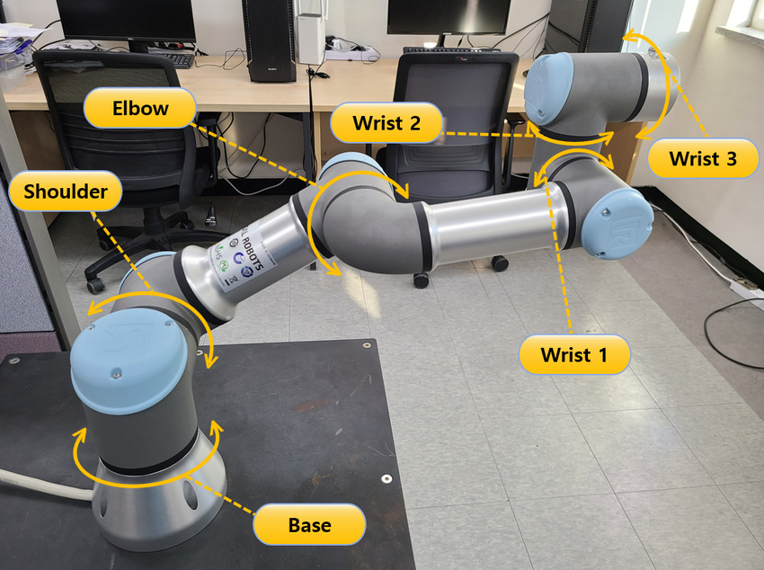

Kinematics is a branch of classical mechanics that describes the motion of objects without considering the forces that cause the motion. Kinematics allows us to analyze and predict the motion of objects by studying their trajectories, speeds, and accelerations without necessarily delving into the underlying causes of that motion. It forms the foundation of many areas of physics, including robotics, aerospace engineering, and biomechanics.
Forward kinematics is a method used in robotics and computer graphics to determine the position and orientation of the end-effector (such as a robot's hand or tool) based on the known values of joint parameters, such as joint angles or lengths. In simpler terms, forward kinematics allows you to calculate where the end of a robot arm or any mechanical system will be located based on the positions of its individual segments or joints. It's like tracing the path of movement from the base of the system to the end.
Calculating forward kinematics using the Denavit-Hartenberg (DH) parameter table involves a systematic approach to model the joint parameters of a robotic manipulator. The DH parameters provide a standardized way to represent the kinematic chain of the robot. Here's a step-by-step guide to understanding and calculating forward kinematics using DH parameters:
A commonly used convention for selecting frames of reference in robotic applications is the Denavit-Hartenberg, or D-H convention. In this convention, each homogeneous transformation Ai is represented as a product of four basic transformations.
| Link | Alpha (°) | A (m) | D (m) | Theta (°) |
|---|---|---|---|---|
| 1 | 90 | 0 | 0.1519 | θ1 |
| 2 | 0 | -0.24365 | 0 | θ2 |
| 3 | 0 | -0.21325 | 0 | θ3 |
| 4 | 90 | 0 | 0.11235 | θ4 |
| 5 | -90 | 0 | 0.08535 | θ5 |
| 6 | 0 | 0 | 0.0819 | θ6 |
1. Define the DH Parameters:
The Denavit-Hartenberg (DH) parameters uniquely define each joint's configuration in the robot. For the UR3
robot, we have six joints, and the DH parameters for each joint include four values: θi, di, ai, and αi.
These
parameters describe the position and orientation of one joint relative to the previous one.
2. Construct Individual Transformation Matrices:
For each joint, we construct a transformation matrix Ai using the DH parameters. This matrix transforms
coordinates from the frame of joint i-1 to the frame of joint i. The transformation matrix Ai is built using
trigonometric functions of θi (the joint angle), and the other parameters di (link offset), ai (link
length),
and αi (link twist).
3. Multiply the Transformation Matrices:
To find the position and orientation of the end-effector (the tool or gripper at the end of the robot arm),
we
need to combine the transformations from each joint. This is done by multiplying the individual
transformation
matrices in sequence:
T = A1 • A2 • A3 • A4 • A5 • A6
Here, T is the overall transformation matrix that describes the position and orientation of the end-effector
relative to the base frame of the robot.
4. Interpretation of the Final Transformation Matrix:
The final transformation matrix T will be a 4x4 matrix containing:
• The rotational part (the top-left 3x3 submatrix) which describes the orientation of the end-effector.
• The translational part (the top-right 3x1 vector) which describes the position of the end-effector in 3D
space.
Inverse kinematics is a technique used in robotics and animation where you start with a desired end position (like where you want a robot arm's hand to be) and work backward to figure out the joint angles or positions needed to achieve that desired end position. It's like solving a puzzle in reverse, finding out how to move the different parts of a system to get to a specific final arrangement.
CCD algorithm iteratively adjusts each joint angle in a chain of joints to minimize the difference between the current end-effector position and the desired position.